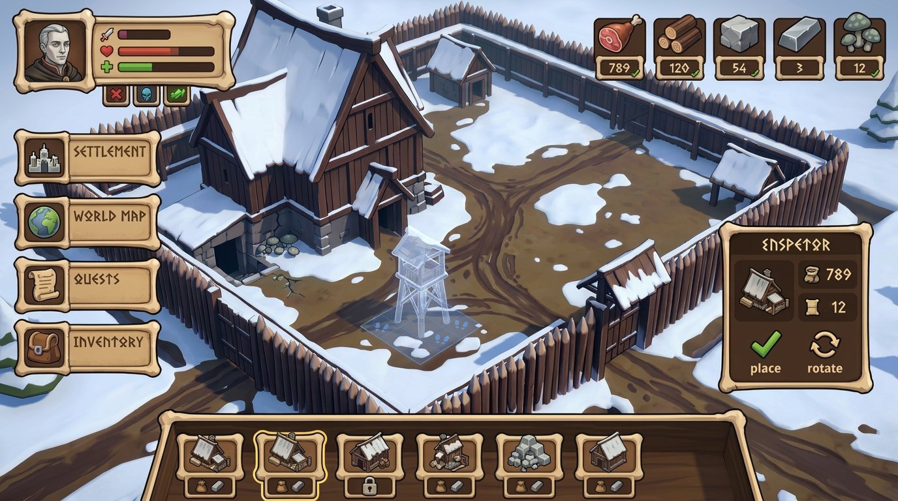
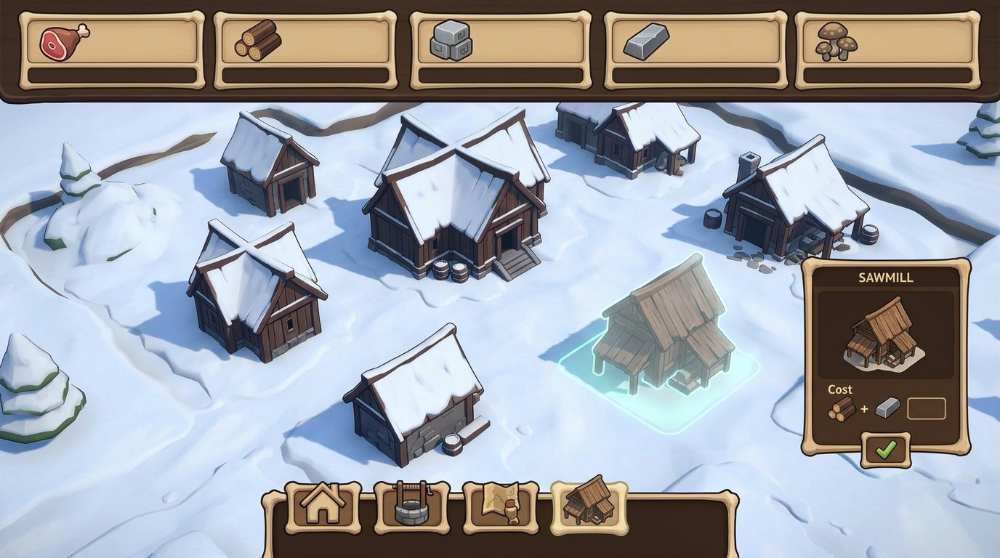
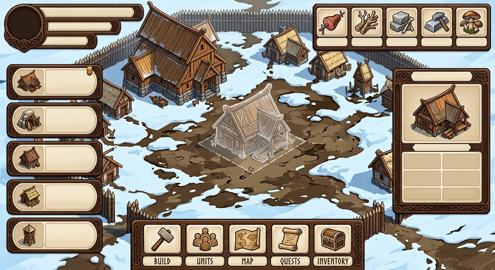
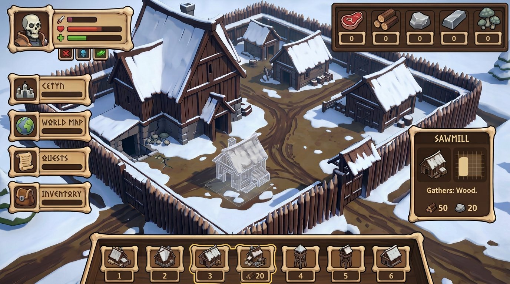
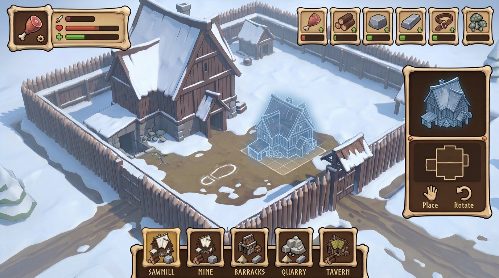

{kind=link}
{kind=link}
{kind=link}
Иконки
Одинаковые толщина контура, оптический размер, степень детализации и направление света — пиктограммы не выглядят собранными из разных наборов.
The Dead Lords · Bone-Wood · refinement 07
Эта серия развивает выбранные вами варианты 04–06 из предыдущей десятки. Цель — не менять Bone-Wood, а привести к общей системе детали: пиктограммы, миниатюры построек, рамки ячеек, состояния и инспектор.
Одинаковые толщина контура, оптический размер, степень детализации и направление света — пиктограммы не выглядят собранными из разных наборов.
Ресурс, цена постройки, доступность и выбор используют одну геометрию карточки; состояние читается рамкой и знаком, не только цветом.
Миниатюра, инспектор и призрак размещения показывают один силуэт в общей изометрии; свободная планировка не сливает объекты в один фон.
Откройте отдельную картинку для просмотра в полном размере. Надписи и цифры внутри AI-изображений — случайные заглушки, не текст игры.

Пять ресурсных ячеек, каталог снизу и инспектор используют одни рамки и пиктограммы.

HUD меньше закрывает двор; выбранное здание показано отдельным призраком с тонким контуром.

Нормальное, выбранное и закрытое состояния сохраняют одну геометрию и толщину контура.

Миниатюра в ячейке, карточка инспектора и объект на поле должны считываться как одна модель.

Синтезирует общий стиль иконок, ячеек, зданий и деталей свободного строительства.
{kind=link}
{kind=link}
{kind=link}
{kind=link}
{kind=link}